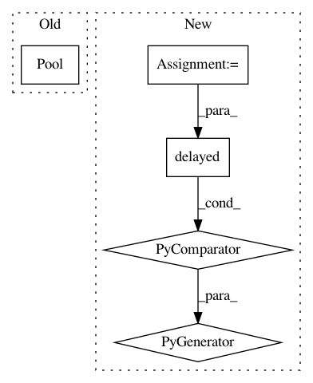

831f5ce7aad0b8172f965c519d0835465ecc7a12,tpot/base.py,TPOTBase,_evaluate_individuals,#TPOTBase#Any#Any#Any#Any#,630
Before Change
// chunk size for pbar update
for chunk_idx in range(0, len(sklearn_pipeline_list),self.n_jobs*2):
if self.n_jobs != 1:
pool = Pool(processes=self.n_jobs)
tmp_result_score = pool.map(_wrapped_cross_val_score, sklearn_pipeline_list[chunk_idx:chunk_idx+self.n_jobs*2])
pool.terminate() // garbage collection
else:
tmp_result_score = map(_wrapped_cross_val_score, sklearn_pipeline_list[chunk_idx:chunk_idx+self.n_jobs*2])
After Change
// chunk size for pbar update
for chunk_idx in range(0, len(sklearn_pipeline_list),self.n_jobs*4):
parallel = Parallel(n_jobs=self.n_jobs, verbose=0, pre_dispatch="2*n_jobs")
tmp_result_score = parallel(delayed(_wrapped_cross_val_score)(sklearn_pipeline, features, classes,
self.cv, self.scoring_function, sample_weight, self.max_eval_time_mins)
for sklearn_pipeline in sklearn_pipeline_list[chunk_idx:chunk_idx+self.n_jobs*4])
// update pbar
for val in tmp_result_score:
if not self._pbar.disable:
In pattern: SUPERPATTERN
Frequency: 3
Non-data size: 5
Instances
Project Name: EpistasisLab/tpot
Commit Name: 831f5ce7aad0b8172f965c519d0835465ecc7a12
Time: 2017-03-31
Author: weixuanf@upenn.edu
File Name: tpot/base.py
Class Name: TPOTBase
Method Name: _evaluate_individuals
Project Name: geomstats/geomstats
Commit Name: 2aa2f30f71f1458dcd74bb24c294850a4b5ed58e
Time: 2020-03-30
Author: nicolas.guigui@inria.fr
File Name: geomstats/geometry/product_manifold.py
Class Name: ProductManifold
Method Name: _iterate_over_manifolds
Project Name: theislab/scanpy
Commit Name: d69aa1862f77db07d8aee64303fa6576701850af
Time: 2021-03-03
Author: ivirshup@gmail.com
File Name: scanpy/preprocessing/_simple.py
Class Name:
Method Name: regress_out